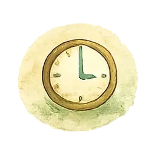
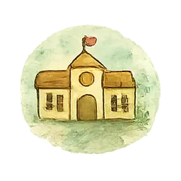
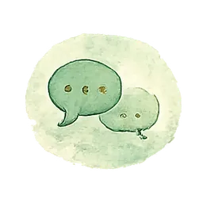

Zum Inhalt springen
Ihr seid nicht zu laut,


Ihr seid nicht zu laut,
zu still oder zu viel.
Wild und verbunden.
Wenn der Alltag knirscht, liegt das selten an einem einzelnen Menschen. Ich schaue mit euch auf das, was dahinter wirkt – und auf den nächsten Schritt, der wirklich möglich ist.
Erstgespräch anfragen ♡Kommt euch das bekannt vor?
Wenn ihr euch in einem dieser Sätze wiederfindet, seid ihr hier richtig.
Kleine Auslöser kippen in große Eskalationen. Danach weiß niemand mehr, wie es dazu kam.
Ein Kind zieht sich zurück und ist kaum noch erreichbar.

Übergänge, Morgende und Hausaufgaben kosten jeden Tag dieselbe Kraft.
Nach Konflikten bleiben Schuld, Scham und Erschöpfung zurück – bei allen.

Schule oder Kita sehen etwas anderes als ihr zu Hause erlebt.

Ihr seid unsicher, wo Grenzen richtig sind – und wo sie zu viel sind.
Euer Kind ist nicht das Problem.
Das Verhalten ist ein Hinweis.
Der Kontext gehört immer mit ins Bild.
Ein Kind muss nicht angepasst sein, um verbunden zu sein.
Was wir gemeinsam anschauen
Nicht nur das Verhalten. Sondern auch, was es möglich oder unmöglich macht.
Was gerade sichtbar ist
Wir beschreiben konkret, was passiert – ohne Bewertung, ohne Etikett. Aus „er ist respektlos“ wird eine Beobachtung, über die man sprechen kann.
Was im Hintergrund wirkt
Zeitdruck, alte Sätze, Erwartungen von außen, fehlende Pausen. Vieles davon ist veränderbar, sobald es benannt ist.
Was der nächste Schritt sein kann
Kein Maßnahmenkatalog. Ein oder zwei Dinge, die in eurem Alltag wirklich gehen – und die ihr ausprobieren dürft.
Für wen ich da bin
Eltern
Wenn ihr das Gefühl habt, alles zu versuchen und trotzdem nicht weiterzukommen.

Kinder & Jugendliche
Mit einer Sprache, die nicht erklärt, was mit ihnen nicht stimmt.
Das ganze Umfeld
Geschwister, Schule, Kita und Helfersysteme dürfen mitgedacht werden.
Ihr müsst den nächsten Schritt nicht schon kennen.
Ein erstes Gespräch ist unverbindlich – und kostet euch nichts außer einer halben Stunde.
Erstgespräch anfragen ♡